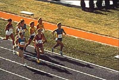

|
Food is the body's fuel to supply energy. Food energy is measured by burning it completely in a device called a calorimeter. This is the theoretical total food energy but not all of it may be available to the body as some parts of food are not digested. Carbohydrates are utilized to 98 percent, fats about 95 percent and proteins about 70 percent. The unit of food energy is the calorie, the amount of energy required to raise the temperature of one gram of water one degree C. Food energy is usually quoted in kilocalories (= 1000 calories) or "big C" Calories. The table below lists the average energy obtained by the body from various food constituents.
But as a fuel, all food is not created equally. Protein supplies about two-thirds of the energy we need to live. Carbohydrates are also a vital source of energy as is fat. Note that fat supplies about 2.25 the energy of protein. The body uses each of these nutrients differently and at different rates.
Daily Energy requirements The number of food calories required per day varies widely depending on factors such as age, gender, activity, health and so on. A very active, male, young adult may require 5000 Cals per day whereas an elderly female may require only 1500 Cals per day. Did you know that the human stomach can not take in 5000 Cals per days of carbohydrates and protein during normal meal schedules? To maintain such energy levels the body must consume fat. Eating an excess of 9g of butter or margarine daily will result in the deposition of 3.2 kg (7 lb) of body fat in a year. This can be removed by walking an extra 2.4 km per day.
Basal Metabolic Rates The basal metabolic rate is the energy in Calories necessary to maintain the body while awake but at rest (no physical activity).
 Activity and Energy Running a sprint, requires the body to burn fuel suddenly, at higher rates than when we are simply sitting or standing. Relaxing at the lake, watching TV doing class work makes no strenuous demands on the body. At rest, your body may need 20% fewer calories per day than when you are doing hard physical work or exercising strenuously.
How do we calculate the daily calorie expenditure of an individual person? As an example let us consider Jeff, an active young male, who likes to play sports and dance a little.
In order to maintain his weight, Jeff would have to consume food energy equivalent to 3561 Cals for this particular day. |